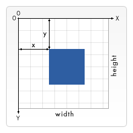

{{ PreviousNext("Web/SVG/Tutorial/Getting_Started", "Web/SVG/Tutorial/Basic_Shapes") }}
In this article, we examine how Scalable Vector Graphics (SVG) represents the positions and sizes of objects within a drawing context, including coordinate system and what a "pixel" measurement means in a scalable context.
For all elements, SVG uses a coordinate system or grid system similar to the one used by canvas (and by a whole lot of other computer drawing routines). That is, the top left corner of the document is considered to be the point (0,0), or point of origin. Positions are then measured in pixels from the top left corner, with the positive x direction being to the right, and the positive y direction being to the bottom. Note that this is slightly different than the way you're taught to graph as a kid (y axis is flipped). However, this is the same way elements in HTML are positioned (By default, LTR documents are considered not the RTL documents which position X from right-to-left).
The element
<rect x="0" y="0" width="100" height="100" />
defines a rectangle from the upper left corner, that spans from there 100px to the right and to the bottom.
In the most basic case one pixel in an SVG document maps to one pixel on the output device (a.k.a. the screen). But SVG wouldn't have the "Scalable" in its name, if there weren't several possibilities to change this behavior. Much like absolute and relative font sizes in CSS, SVG defines absolute units (ones with a dimensional identifier like "pt" or "cm") and so-called user units, that lack that identifier and are plain numbers.
Without further specification, one user unit equals one screen unit. To explicitly change this behavior, there are several possibilities in SVG. We start with the svg root element:
<svg width="100" height="100">
The above element defines a simple SVG canvas with 100x100px. One user unit equals one screen unit.
<svg width="200" height="200" viewBox="0 0 100 100">
The whole SVG canvas here is 200px by 200px in size. However, the viewBox attribute defines the portion of that canvas to display. These 200x200 pixels display an area that starts at user unit (0,0) and spans 100x100 user units to the right and to the bottom. This effectively zooms in on the 100x100 unit area and enlarges the image to double size.
The current mapping (for a single element or the whole image) of user units to screen units is called user coordinate system. Apart from scaling the coordinate system can also be rotated, skewed and flipped. The default user coordinate system maps one user pixel to one device pixel. (However, the device may decide, what it understands as one pixel.) Lengths in the SVG file with specific dimensions, like "in" or "cm", are then calculated in a way that makes them appear 1:1 in the resulting image.
A quote from the SVG 1.1 specification illustrates this:
[...] suppose that the user agent can determine from its environment that "1px" corresponds to "0.2822222mm" (i.e., 90dpi). Then, for all processing of SVG content: [...] "1cm" equals "35.43307px" (and therefore 35.43307 user units)
{{ PreviousNext("Web/SVG/Tutorial/Getting_Started", "Web/SVG/Tutorial/Basic_Shapes") }}